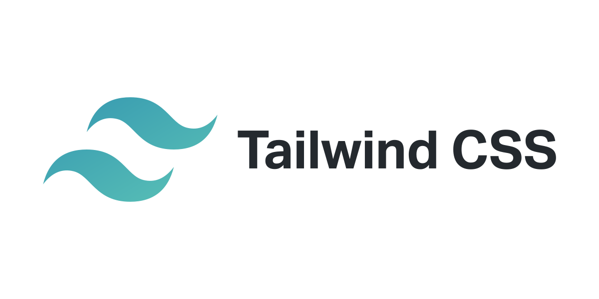

Tailwind
Tailwind CSS — это CSS- фреймворк с открытым исходным кодом.

Описание и ссылки на обучающие материалы
Tailwind CSS — это CSS- фреймворк с открытым исходным кодом . Основная особенность этой библиотеки заключается в том, что, в отличие от других фреймворков CSS, таких как Bootstrap , она не предоставляет ряд предопределенных классов для таких элементов , как кнопки или таблицы. Вместо этого он создает список «служебных» классов CSS, которые можно использовать для стилизации каждого элемента путем смешивания и сопоставления.
-
Документация Tailwind CSS
URL
tailwindcss.ru/Tailwind CSS работает, сканируя все ваши HTML-файлы, компоненты JavaScript и любые другие шаблоны на предмет имен классов, генерируя соответствующие стили и затем записывая их в статический CSS-файл.Это быстро, гибко и надежно - с нулевым временем работы.
-
Tailwind CSS с нуля
URL
udemi.jpg)
Научитесь создавать и редактировать макеты очень быстро. Изучите служебные классы Tailwind с помощью песочницы кода. Создайте 5 мини-проектов и 6 проектов веб-сайтов. Узнайте, как настроить среду разработки с помощью интерфейса командной строки Tailwind. Настройте свои стили для создания пользовательских макетов.
-
Видеокурс
.jpg)
В ходе урока для начинающих вы с нуля изучите принцип работы данной технологии, научитесь прописывать стили на её основе и разработаете небольшой веб сайт при помощи Tailwind CSS.
-
Telegram-группа
URL
telegram.jpg)
Tailwindcss - русскоязычное сообщество
Чат, в котором помогаем друг другу разобраться с фреймворком Tailwindcss. Изучаем его настройки, обсуждаем его работу.
-
discord-канал
URL
discord.jpg)
Tailwind CSS — это низкоуровневый CSS-фреймворк с широкими возможностями настройки, который предоставляет вам все строительные блоки, необходимые для создания индивидуального дизайна, без каких-либо надоедливых самоуверенных стилей, за переопределение которых вам приходится бороться.